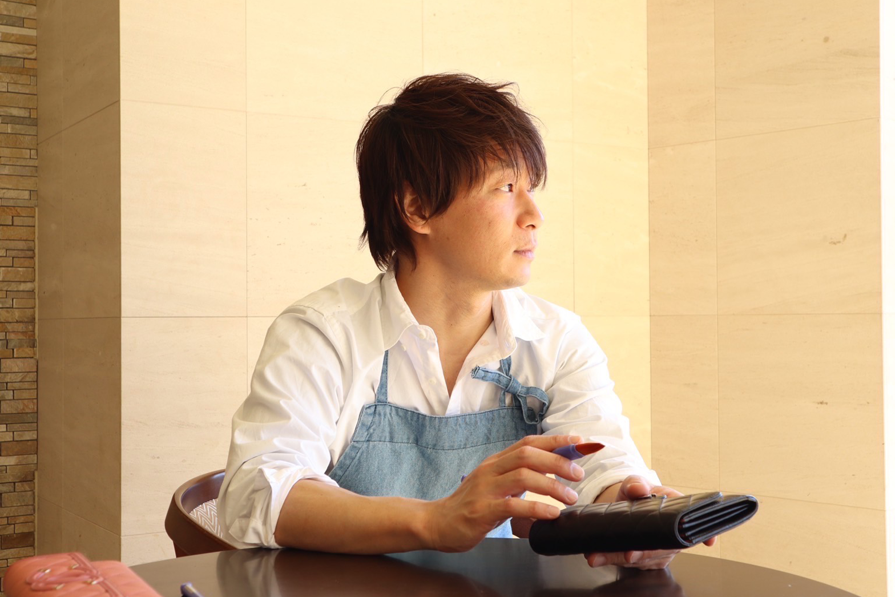
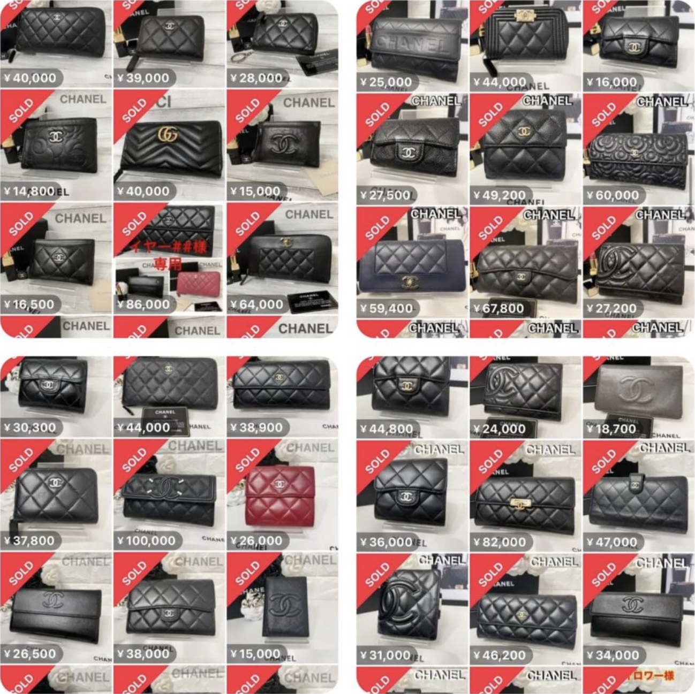

第2話をご覧いただき
ありがとうございます

講師の小堀です。
第2話もご視聴いただき、誠にありがとうございます。
第1話では、ブランドリペア物販の全体像やこれからの展望、可能性についてお伝えしました。
もしあなたが、「今の収入にプラスαが欲しい」「自宅で、好きな時間にできる仕事を探している」「価値あるスキルを身につけて、長く安定して稼ぎたい」と感じているなら、この第2話は見逃せません。
なぜ、単なる”転売”と違うのか？
高利益率ビジネスの”秘密”
・物販を始めたけど、価格競争ばかりで利益がほとんど出ない…」
・商品は仕入れられても、結局安売りしないと売れない…」
もしあなたが、従来の物販や副業でそんな薄利多売や不安定な収益に頭を悩ませているなら、全く新しい道があります。
この「ブランドリペア物販」は、少しの手間（＝あなたのスキル）を加えることで仕入れた商品の価値を劇的に高め、高利益率（実に40%～80%）で販売することを可能にします。
なぜなら、本来なら安価でしか取引されない「訳あり品」を仕入れて、あなたのリペア技術によって見違えるような「新品ような状態」へと生まれ変わらせることができ、その価値が大きく向上した差額分を正当な利益として獲得できるからです。
なぜ、リペアするだけでそんな高利益率が実現できるのか？
第2話では、その具体的な「収益構造」の秘密と、商品の価値を最大限に高めるリペアの重要ポイントを、豊富な実際の事例（Before/After写真や収益データなど）を交えて、詳細に明らかにしています。
これを知れば、もうあなたは不毛な価格競争に巻き込まれる必要はありません。
なぜなら、あなたが丁寧にリペアした商品は、仕入れ時の状態とは全く異なる「あなただけの付加価値」を持つ特別な一点物となり、他の安価な（未リペアの）商品と単純比較される土俵から抜け出し、「価値」に見合った適正な価格で自信を持って販売できるようになるからです。
「本当にスキマ時間でできるの？」
その疑問に”動かぬ証拠”でお答えします
・リペアなんて難しそう…
・不器用な私にもできるの？
・家事や育児、本業で忙しくて、まとまった時間が取れない…
そう思われるかもしれません。
しかし、特別な経験がない専業主婦の方が、家事の合間のスキマ時間だけで、月に平均7万円の副収入を得ているとしたら？
第2話では、「本当にスキマ時間でリペアが終わるのか？」を実際の作業映像とタイマーを使って【徹底検証】しています。
簡単な汚れ落としやキズ補修が、驚くほど短時間で完了する様子や、見違えるように綺麗になった【Before/After画像】をあなたの目で直接お確かめください。
老後も、副業でも、在宅でも。
あなたのライフスタイルに合わせた
新しい働き方
「もう若くないから、新しいことを始めるのは少し不安…」
「本業が忙しくて、副業なんてできる時間があるか心配…」
「子供が小さいから、外に働きに出るのは難しい…」
どうかご安心ください。
なぜなら、このブランドリペア物販は、特別な作業場所を必要とせずご自宅で完結でき、1日数十分といった「スキマ時間」からでもスタート可能、そして体力的な負担も少ないため、年齢や時間に縛られずにご自身のペースで無理なく続けられるビジネスだからです。
この、場所や時間に捉われずに実践できるという特性によって、
・老後の「もう一つの安定した収入源」を探している方
・本業にプラスアルファの「第2、第3の収入の柱」を増やしたい会社員の方
・家事や育児の合間を有効活用して「在宅でしっかり収入を得たい」子育てママ
・天候や季節に左右されることなく「年間を通して安定した収入」を確保したい職人さん
・既存の物販ビジネスの「利益率を劇的に改善し、収益を最大化したい」事業者の方
・将来性があり、かつ「長く続けられる高収益な新規事業」の立ち上げを検討されている経営者の方
など、本当に様々な立場の方が、現在のライフスタイルを大切にしながら、理想の収入を得られる大きな可能性を秘めています。
それはまた、個人の小さな一歩から始めて、将来的には外注化などを活用し事業として大きく育てていくことも可能な柔軟性と拡張性を兼ね備えたビジネスモデルでもあるからです。
まさに第2話では、実際の作業実演（タイム計測付き）や「どれくらいの作業時間で」「実際にいくら稼いでいるのか」という生々しい収益実例、そしてなぜ高い利益率を生み出せるのかを示す商品の秘密などを豊富な【証拠映像・画像】と共にご覧いただけます。
「これなら、今の私にもできるかもしれない！」
「こんな働き方があるなんて知らなかった！」
第2話をご視聴いただくことで、その具体的な可能性と、ご自身の輝く未来像をはっきりとイメージし、確信を得られるはずです。
もしまだ第2話をご覧になられていない場合は、この機会にぜひ今すぐご視聴ください。
- 【衝撃のBefore/After】数千円のブランド品が〇〇万円に！？驚きの高収益事例を証拠画像付きで大公開
- 利益率40%～80%を叩き出す仕入れ～販売までの全プロセスとは？（未経験の方はこのプロセスをそのまま行ってください...）
- 【本当にスキマ時間でOK？】 タイマーで徹底検証！家事育児の合間、1回20分～リペア作業で本当に稼げるのか？（主婦・副業で取り組みたい方は必見です）
- 1商品10万円超えも夢じゃない？！プロがリペアした高単価財布の実例を惜しみなく紹介！仕入れ値、リペア費用、販売価格…収益のカラクリを公開
- 完全未経験でも安心の3ステップ具体的な作業手順（クリーニング～色止め）を動画付きで丁寧に解説
第2話でお伝えする内容
第2話では、ブランドリペア物販が本当に「スキマ時間」で実践可能であり、驚くほどの高利益率（40%〜80%）を生み出す具体的な「証拠」をご覧いただけたかと思います。
「本当に私にもできるの？」
「具体的に、何から始めればいいの？」
そう感じているあなたへ。
最終回となる第3話では、その疑問や不安を解消し、未経験からでも着実に収入を得ていくための『具体的なロードマップ』を、ステップバイステップで詳しく解説します。
私も、会社員時代から時間に追われることなく、家族との時間を大切にしながら収入を築けるとは、始めた当初は想像もしていませんでした。
しかし、正しい手順とちょっとしたコツを知れば、それは決して難しいことではありません。
第3話では、
・収入目標達成までの具体的なステップとその内容
・小堀流！スキマ時間活用術と家族との時間を大切にする秘訣
・初心者がまず狙うべき商品と、おすすめの販売先
・失敗しないために！知っておくべき注意点（偽物対策、許可など）
・成功に不可欠な３つの最重要スキルとは？
など、あなたが迷わず行動を開始し、最短で成果を出すために欠かせない情報をお届けします。
このロードマップを手に入れることで、あなたは「何を」「どの順番で」やればいいのかが明確になり、自信を持って第一歩を踏み出すことができるはずです。
ブランドリペア物販で、あなたの理想のライフスタイルを実現するための最終講義。
第3話も、画面の前であなたとお会いできることを心より楽しみにしております。
小堀 潤
